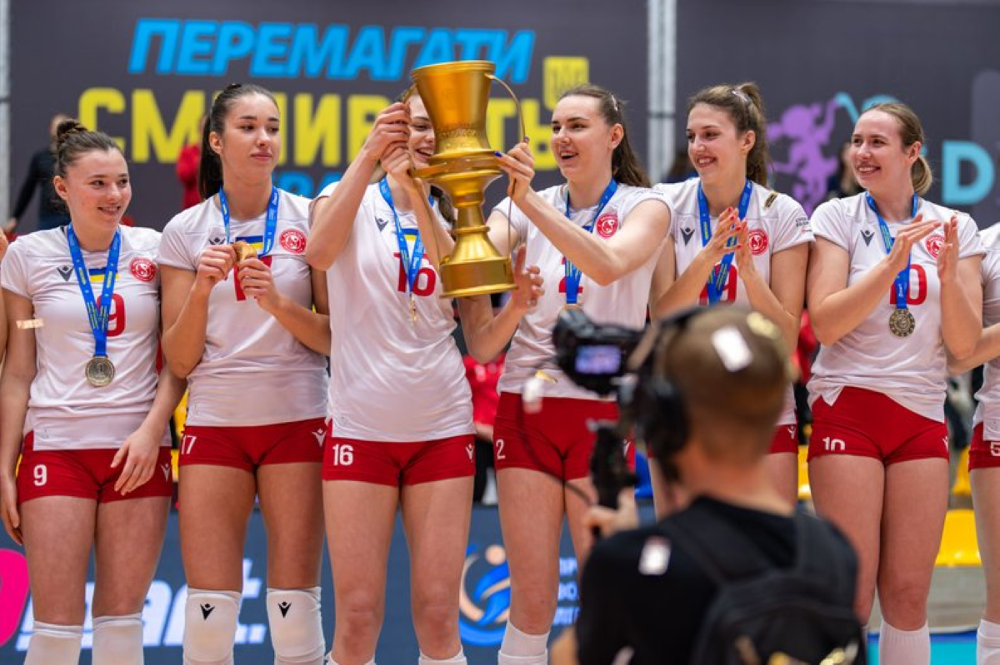

Волейбол в Україні має багаті традиції, і цей вид спорту активно розвивається в різних куточках країни. Змагання з волейболу проводяться на національному та регіональному рівнях, і в них беруть участь як аматорські, так і професійні команди. Українські клуби та національні команди регулярно беруть участь у міжнародних змаганнях, демонструючи високий рівень гри.
- Чемпіонат України: Це найважливіше національне змагання серед чоловічих і жіночих команд. Щороку в ньому беруть участь найкращі клуби з різних регіонів України. Чемпіонат визначає сильніші команди, які згодом можуть брати участь у міжнародних клубних турнірах.
- Кубок України: Кубок України проводиться серед команд, які змагаються за титул найкращої команди країни. Змагання складаються з декількох етапів, і фінал часто проходить у великих містах, таких як Київ або Харків.
- Турніри серед молоді: Одним із важливих аспектів розвитку волейболу в Україні є турніри серед молодих спортсменів. Вони дають можливість новим талантам заявити про себе на національному рівні та отримати досвід участі в серйозних змаганнях.
Волейбол в Україні розвивається завдяки численним змаганням, що проходять по всій країні. Від аматорських турнірів до великих клубних змагань, Україна активно підтримує цей вид спорту. Наприклад, великою популярністю користуються турніри в таких містах, як Київ, Харків, Львів, Одеса та Дніпро, де волейбол — це одна з основних спортивних дисциплін.
Українська національна команда, хоча і стикається з сильними суперниками, завжди змагається за високі місця на міжнародних змаганнях, зокрема на чемпіонатах Європи та світу. Проте великим стимулом для розвитку є не лише змагання на рівні клубів і національних команд, а й тренувальні бази, які активно створюються в країні. Це допомагає залучати нових гравців і покращувати інфраструктуру волейболу в Україні.
Важливою частиною волейболу є регіональні змагання, які проходять в різних областях країни. Такі турніри сприяють розвитку спорту на місцевому рівні, де талановиті гравці можуть продовжити свою кар'єру, потрапивши до професійних команд. Регіональні змагання — це чудова можливість для виявлення нових зірок волейболу, які можуть виступати на більш високих рівнях.
Змагання з волейболу в Україні не тільки служать основою для розвитку спортивної майстерності, але й допомагають зміцнити національну ідентичність та об'єднують людей навколо цього чудового виду спорту. Волейбол здатен об'єднувати різні покоління людей, надаючи можливість тренуватися та змагатися на високому рівні.